Embodied manipulation requires accurate 3D understanding of objects and their spatial relations to plan and execute contact-rich actions. While large-scale 3D foundation models provide strong priors, their computational cost incurs prohibitive latency for real-time control. We propose Real-time 3D-aware Policy (R3DP), which integrates powerful 3D priors into manipulation policies without sacrificing real-time performance.
A core innovation of R3DP is the asynchronous fast-slow collaboration module, which sophisticatedly integrates large-scale 3D model's priors into the policy without compromising real-time performance. The system queries the pre-trained slow system (VGGT) only on sparse keyframes, while simultaneously employing a lightweight Temporal Feature Prediction Network (TFPNet) to predict features for all intermediate frames. Additionally, we introduce a Multi-View Feature Fuser (MVFF) that aggregates features across views by explicitly incorporating camera intrinsics and extrinsics.
R3DP offers a plug-and-play solution for integrating 3D foundation models into real-time inference systems. R3DP effectively harnesses large-scale 3D priors to achieve superior results, outperforming single-view and multi-view DP by 32.9% and 51.4% in average success rates. Furthermore, by decoupling heavy 3D understanding from policy execution, R3DP achieves a 44.8% reduction in inference time compared to a naive DP+VGGT integration.
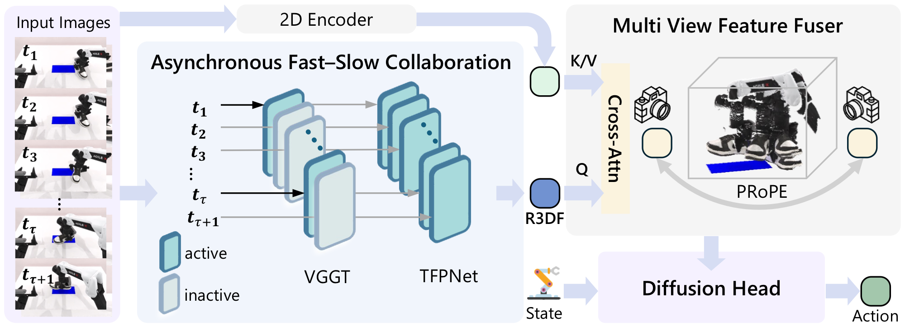
Overview of the R3DP architecture. R3DP serves as a 3D-aware perception module that seamlessly replaces visual encoders in existing imitation learning frameworks. Within the AFSC module, sparse keyframes are processed by a 3D foundation model (VGGT), while intermediate frames are handled by our TFPNet for real-time temporal reasoning. MVFF module leverages cross-attention with PRoPE to fuse 2D-3D features into consistent multi-view representations for control.
AFSC treats a large 3D vision foundation model as the slow system that takes current multi-view RGB images every τ inferences, computing high-fidelity Slow 3D-aware Features (S3DF). Meanwhile, a lightweight fast system (TFPNet) propagates these features to every intermediate frame using historical context to predict Real-time 3D-aware Features (R3DF).
TFPNet is a lightweight network that leverages historical-frame 3D-aware features to predict current-frame features in real-time. It uses a DINOv2-S backbone with 4 Alternating-Attention Transformer blocks, followed by cross-attention to inject temporal priors from previous frames.
MVFF explicitly leverages camera intrinsics and extrinsics for geometry-aware cross-view feature alignment. Using Projective Positional Encoding (PRoPE), it achieves consistent 3D-aware representation across viewpoints while respecting camera geometry.
R3DP achieves 32.9% higher success rate than single-view DP and 51.4% higher than multi-view DP in simulation benchmarks. In real-world experiments, it outperforms baselines by a significant margin. Furthermore, R3DP reduces observation encoding latency by 44.8% compared to naive DP+VGGT integration, enabling real-time control.
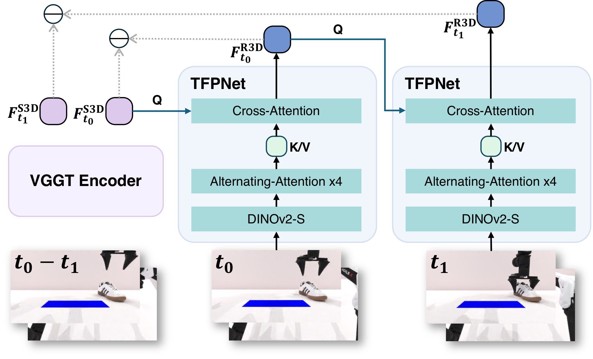
Architecture and training objective of TFPNet. For clarity, we show the unrolled structure for the first two timesteps; in practice, the network is trained over a sequence of four timesteps. TFPNet leverages historical information to augment current observations, enabling 3D-aware control with real-time inference efficiency.
| Task | DP-single | DP-multi | DP3 | π0 | R3DP (τ=4) | R3DP (τ=8) |
|---|---|---|---|---|---|---|
| Block Hammer Beat | 0% | 0% | 49% | 47% | 77% | 77% |
| Block Handover | 1% | 2% | 48% | 71% | 95% | 93% |
| Blocks Stack Easy | 6% | 7% | 26% | 79% | 69% | 62% |
| Shoe Place | 45% | 19% | 49% | 71% | 72% | 68% |
| Put Apple Cabinet | 92% | 38% | 98% | 64% | 100% | 98% |
| Tube Insert | 92% | 64% | 97% | 68% | 97% | 97% |
| Average | 36.1% | 17.6% | 57.6% | 59.9% | 69.0% | 65.7% |
| Task | DP | DP3 | DP+V+M | R3DP |
|---|---|---|---|---|
| Place Shoe | 46.7% | 50.0% | 76.7% | 86.7% |
| Place Glass Cup | 23.3% | 56.7% | 76.7% | 83.3% |
| Pick Peach | 20% | 30% | 46.7% | 50% |
| Stack Bowls | 33.3% | 56.7% | 66.7% | 66.7% |
| Average | 30.8% | 48.4% | 66.7% | 71.7% |
| Latency (ms) | DP+VGGT | DP+VGGT+MVFF | R3DP (τ=4) | R3DP (τ=8) |
|---|---|---|---|---|
| Obs. Encoder | 73.1 | 78.3 | 50.5 (↓30.9%) | 40.3 (↓44.8%) |
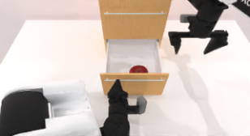
RGB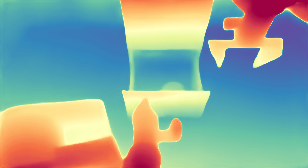
VGGT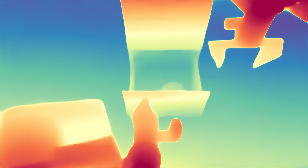
Ours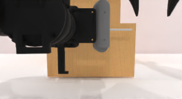
RGB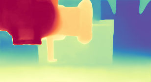
VGGT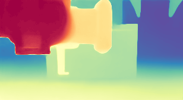
Ours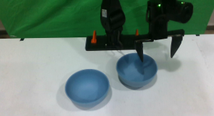
RGB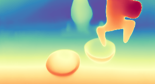
Ours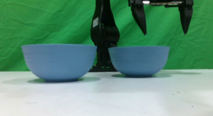
RGB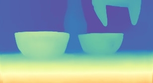
VGGT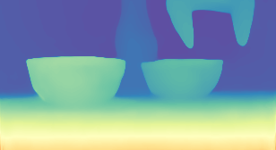
OursVisualization of depth maps decoded from VGGT features and from our TFPNet-predicted features passed through VGGT's depth decoder. The close visual agreement indicates that our lightweight TFPNet effectively captures information generated by 3D foundation model in both simulation and real-world experiments.
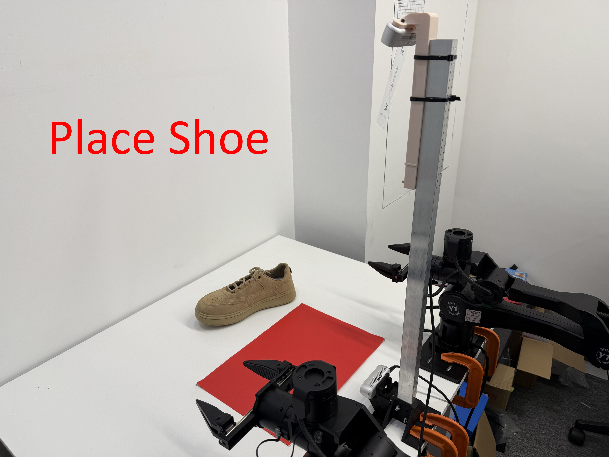
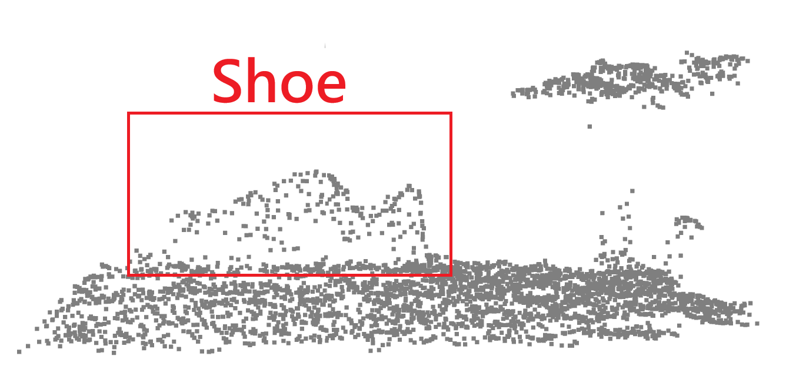
Place Shoe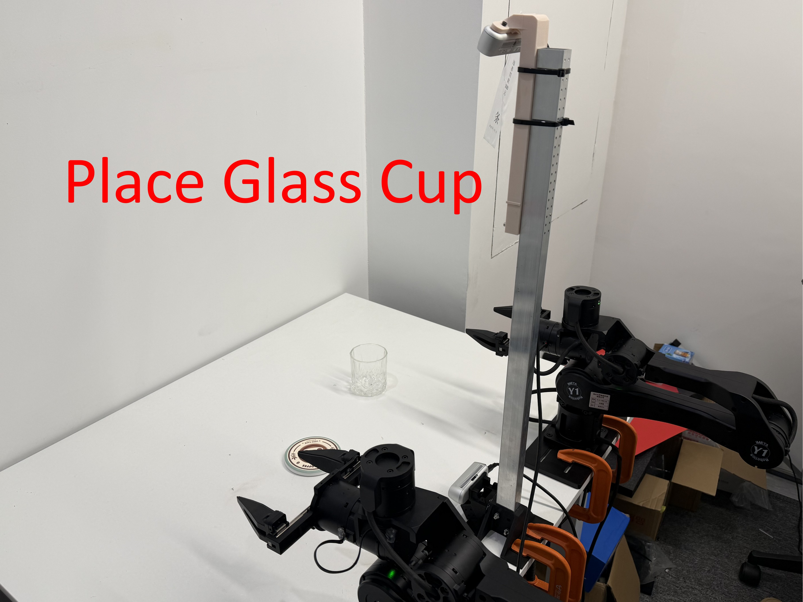
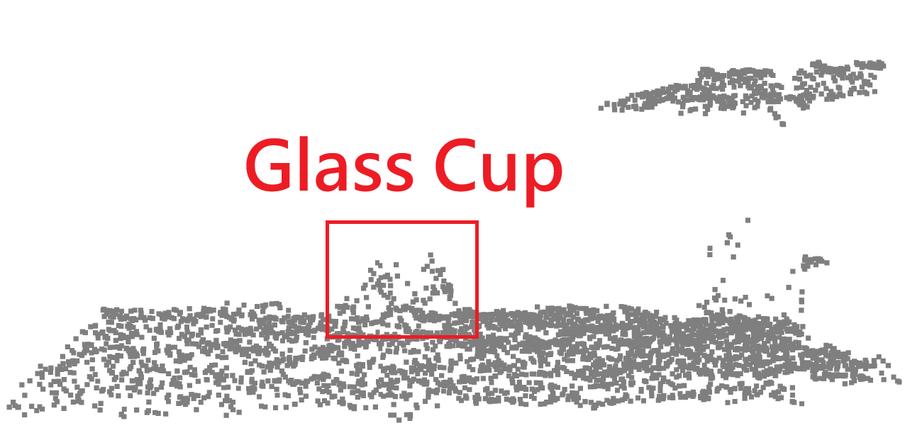
Place Glass Cup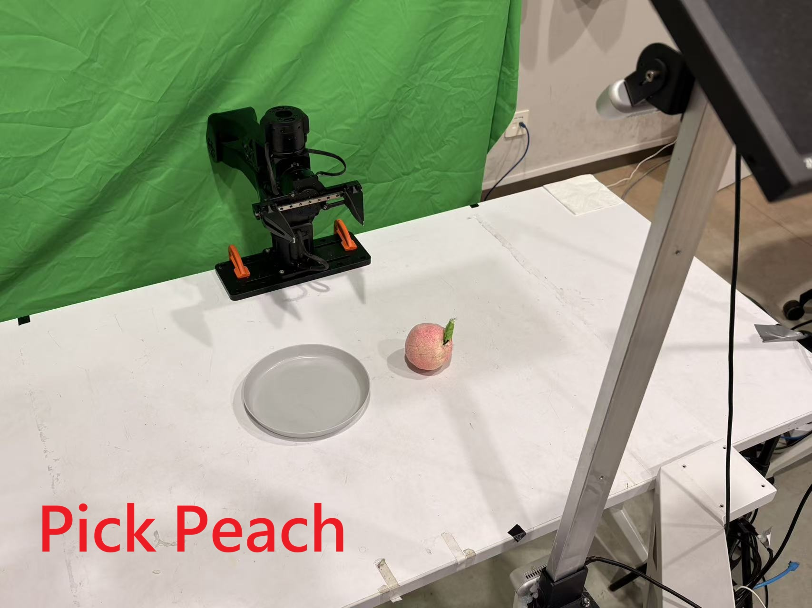
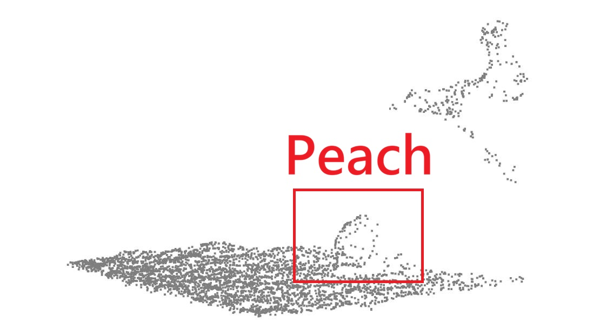
Pick Peach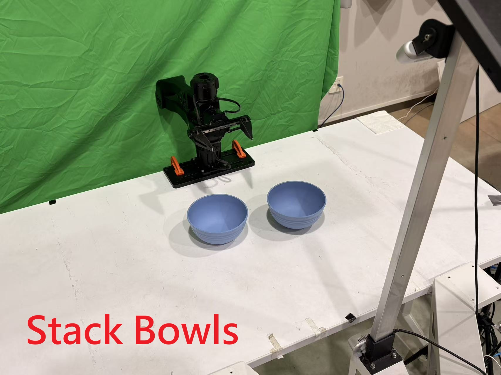
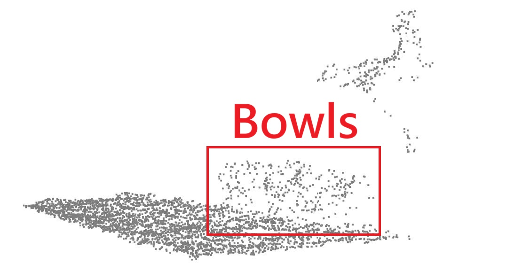
Stack BowlsReal-world experimental platforms and point cloud inputs. We evaluate our method on the ArmBot-Y1 bimanual robot for tasks including Place Shoe and Place Glass Cup, and a single-arm robot for Pick Peach and Stack Bowls. Both platforms are equipped with dual RealSense D435 cameras to generate the ground-truth point clouds used by the DP3 baseline.
If you find our work useful, please consider citing:
@article{r3dp2025,
title={R3DP: Real-Time 3D-Aware Policy for Embodied Manipulation},
author={Zhang, Yuhao and Dong, Wanxi and Shi, Yue and Liang, Yi and Gao, Jingnan and Yang, Qiaochu and Lyu, Yaxing and Liang, Zhixuan and Liu, Yibin and Xu, Congsheng and Guo, Xianda and Sui, Wei and Jin, Yaohui and Yang, Xiaokang and Xu, Yanyan and Mu, Yao},
journal={arXiv preprint},
year={2025}
}